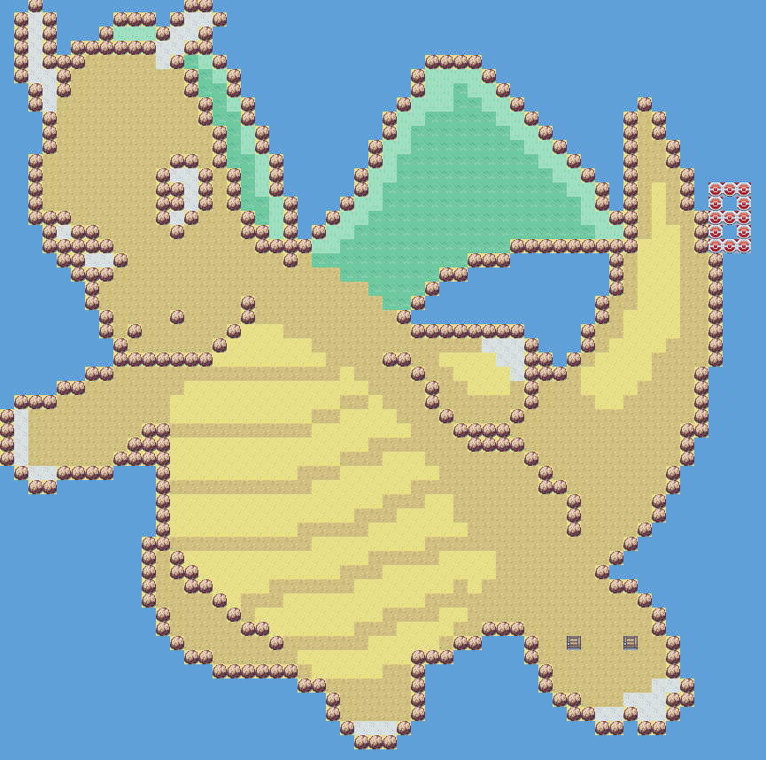
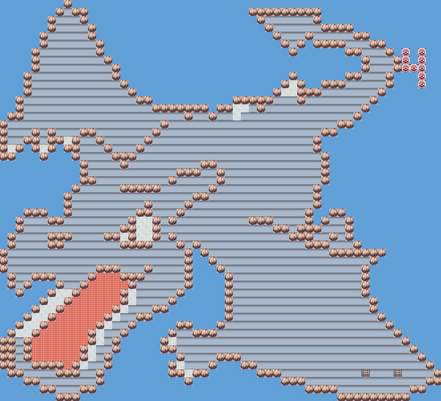
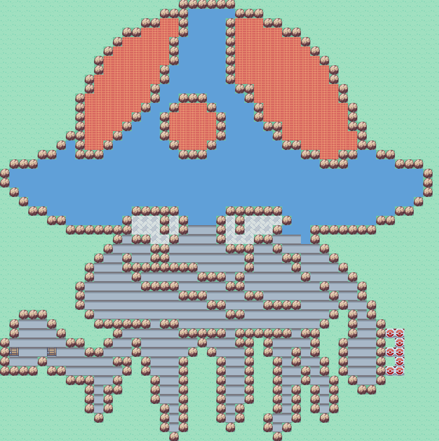
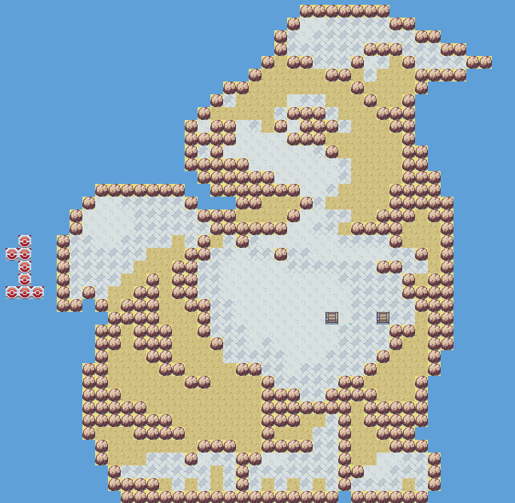
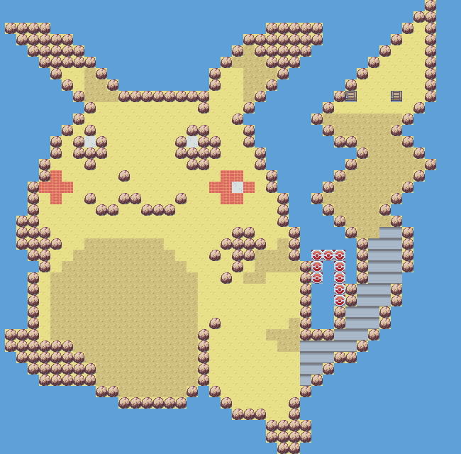
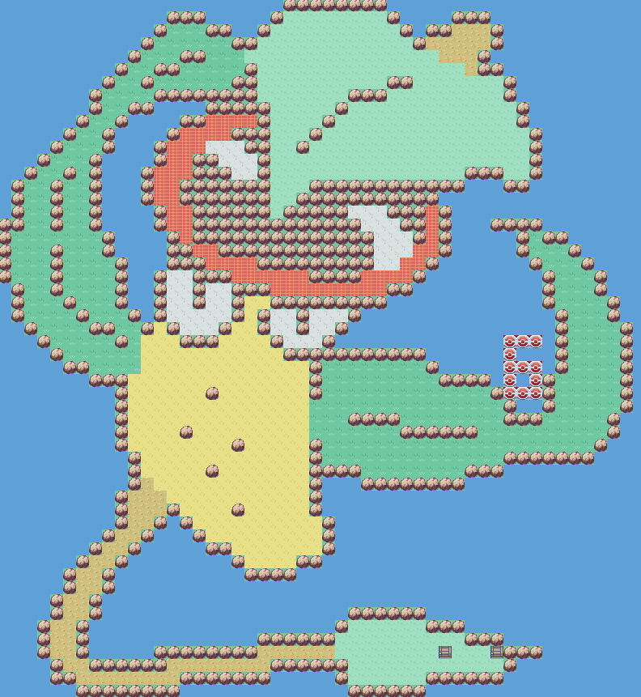

Solution: Twitch Plays GPH
Answer: TONGUE
Written by Colin Lu and Jon Schneider
This is a Twitch Plays game, akin to the original Twitch Plays Pokemon. For this puzzle, solvers controlled a character in a ROM hacked Pokemon game via Twitch Chat commands.
While it is no longer possible to participate directly, it's possible to solve the puzzle from the saved recording of the original solvers . In fact, solvers late to look at this puzzle could solve it during the hunt from the video archive also.
The puzzle involves exploring the world and identifying the maps, each of which is essentially "pixel art" of a Pokemon
from the original games. Each room number is shown as the player enters, which gives a natural ordering. The full maps for each
of the rooms are as follows:






Furthermore, each map includes a number drawn out somewhere, which is used to index into the Pokemon's name (other features, such as the standard city names, were intentionally removed to prevent red herrings).
| Room number | Pokemon | Index | Letter to extract |
|---|---|---|---|
| 1 | DRAGONITE | 8 | T |
| 2 | AERODACTYL | 4 | O |
| 3 | TENTACRUEL | 3 | N |
| 4 | GROWLITHE | 1 | G |
| 5 | PIKACHU | 7 | U |
| 6 | VICTREEBEL | 6 | E |
Reading the indexed letters in the order of the room numbers gives the answer, TONGUE.
Author’s Notes
Early on, we discussed the idea of making a puzzle for the hunt with interaction between teams. We tossed around numerous ideas. Many of these ideas involved having everyone control a single character exploring a world, and at some point we realised the natural way to implement such a game is via a "Twitch Plays Pokemon"-style experience. The original plan was to have solvers identify countries, but we decided identifying Pokemon made a lot more sense in this format.
To test this puzzle, we tried to get as many team members as possible, working independently, to solve the puzzle at the same time. After our tests we disabled the Start and Select buttons to save a lot of time, and made several other optimizations, but of course it would still be difficult to predict how the puzzle would go in the actual hunt. We decided to put the puzzle first, and started showing the video 5 minutes into the hunt in order to allow the greatest number of people to experience the puzzle simultaneously.
During the hunt, we found that the initial burst of teams (up to around 500 people in the chat when the hunt started) cooperated much more effectively than our testers did, and they managed to explore enough of the map to solve the puzzle in about 40 minutes. Teams that looked at this puzzle later could solve it more efficiently by using the Twitch video archive of the stream, but we still had a sizable number of live viewers several days into the hunt.